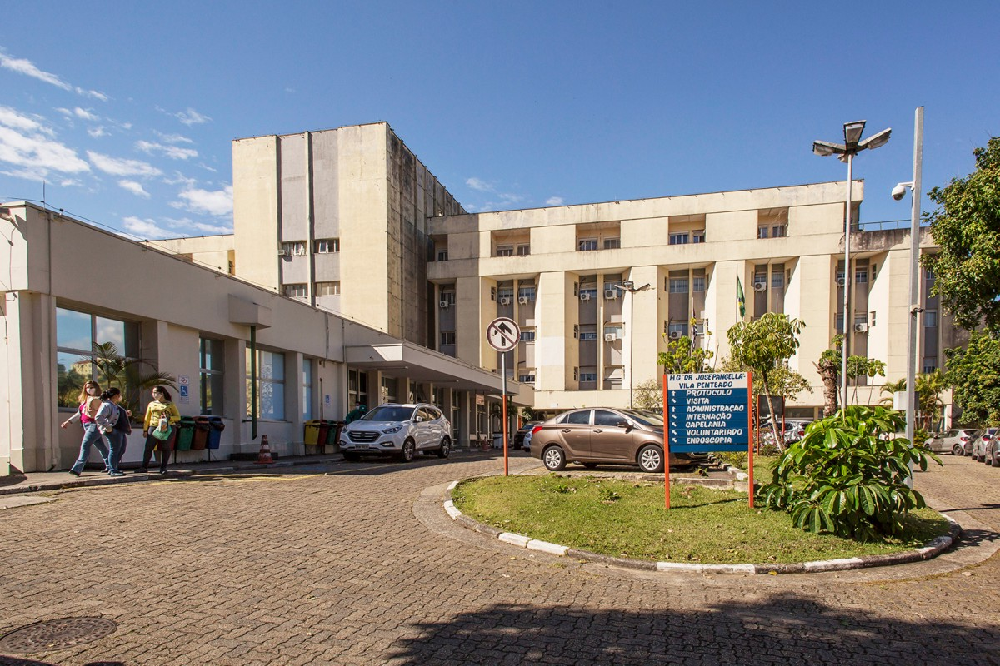

Bar du Ó
Localizado na esquina da Avenida Itaberaba com a Rua Bica, o Bar du Ó é um boteco de respeito na região da Freguesia. Os bistrôs de madeira ocupam a calçada e às vezes até a própria rua, dependendo da lotação da casa. O local é ideal para quem quer tomar uma cerveja de garrafa com os amigos sem frescuras e com muitas opções de petiscos de boteco para beliscar.
Endereço: Largo da Matriz Nossa Senhora do Ó, 168

Endereço: Largo da Matriz, 74
Grelha, Burguer, Breja e Comida bruta
O Grelha BBC reúne no Largo da Matriz burger, breja e comida bruta! A hamburgueria fica localizada no Largo da Matriz, com mesas na calçada e ambiente bem descontraído. O cardápio é honesto, sem frescuras, com cervejas diferenciadas, lanches bem caprichados e entradas na pegada tex-mex.
FrangÓ
O FrangÓ é um dos bares mais tradicionais de São Paulo. Ocupando o mesmo endereço desde 1987, o boteco é famoso pela sua coxinha, que já conquistou diversos prêmios gastronômicos. A carta de cervejas também se desta já que conta com rótulos artesanais e conceituados. Mesas ao ar livre ocupam a calçada do Largo da Matriz.
Endereço: Largo da Matriz Nossa Senhora do Ó, 168

Hospital Municipal da Brasilândia
Localizado na esquina da Avenida Itaberaba com a Rua Bica, o Bar du Ó é um boteco de respeito na região da Freguesia. Os bistrôs de madeira ocupam a calçada e às vezes até a própria rua, dependendo da lotação da casa. O local é ideal para quem quer tomar uma cerveja de garrafa com os amigos sem frescuras e com muitas opções de petiscos de boteco para beliscar.
Endereço: Av. Michihisa Murata, 150
Endereço: Av. Min. Petrônio Portela, 1642
Hospital Geral Vila Penteado
Hospital Geral Vila Penteado é uma unidade pública de saúde que atua com atendimentos de urgência e emergência. Além disso, atende diversas especialidades médicas, como: pediatria, ortopedia, clínica geral e outros.
Colégio Ensino
“Promovemos o desenvolvimento dos alunos, ampliando suas experiências, conhecimentos e estimulando-os a participarem de nossas atividades que serão trabalhadas de acordo com a faixa etária, respeitando cada desenvolvimento”
Endereço: R. São Feliciano, 215
Endereço: Av. Dep. Cantídio Sampaio, 1248
.png)
Colégio 24 de Maio
Colégio 24 de Maio na Unidade Freguesia iniciou suas atividades em 2005, com cursos técnicos voltados para área da saúde, porém somente no ano seguinte, ou seja, em 2006 iniciam-se as primeiras turmas do Ensino Fundamental I.
Escola Estadual Padre Manoel da Nóbrega
O Manuel Da Nobrega Padre oferece toda a estrutura necessária para o conforto e desenvolvimento educacional dos seus alunos, como por exemplo: Internet, Banda Larga, Reciclagem de Lixo, Refeitório, Biblioteca, Quadra Esportiva, Quadra Esportiva Coberta, Laboratório de Ciência, Laboratório de Informática, Sala de Leitura, Auditório, Pátio Coberto, Pátio Descoberto, Área Verde, Sala do Professor e Alimentação.
Endereço: Av. Itaberaba, 145